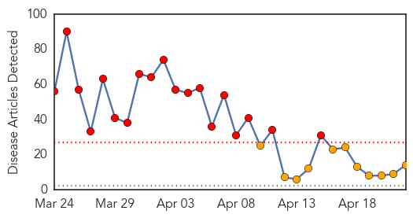
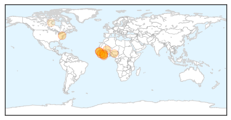
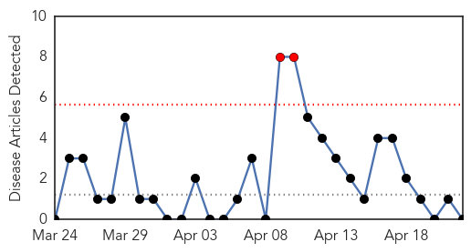

Ebola
30-Day Web Trend
19 alerts, 11 warnings

30-Day Twitter Trend
4 alerts, 0 warnings

Article Locations
Article Confidences
Top Articles:
- 1.000
- Ebola virus disease, West Africa – update
- 1.000
- Standard Digital News - Mobile Site
- 1.000
- Kenya : Study: New strain is responsible for Ebola outbreak in West Africa
- 1.000
- Local And Global Health Groups Rally to Prevent Viral Disease
- 1.000
- Guinea says few new Ebola cases, outbreak nearly under control
- 0.999
- Ebola Virus Disease in West Africa 203 Cases, 129 Deaths
- 0.997
- Inserm And The Institut Pasteur Identify A New Variant Of Ebola Virus In Guinea
- 0.997
- Inserm and the Institut Pasteur identify a new variant of Ebola virus in Guinea
- 0.997
- Guinea dispatches equipment to contain outbreak of Ebola
- 0.990
- Ebola: Facing down fear to save lives in Guinea
- 0.921
- Kenya : Study: New strain is responsible for Ebola outbreak in West Africa
- 0.894
- Inside the tent: What a Canadian doctor saw on the frontline of West Africa’s Ebola outbreak
- 0.841
- Top 5 Countries in Need of Better Healthcare
- 0.521
- Page not found
Top Tweets:
-
No tweets found for Apr 22, 2014
Hepatitis
30-Day Web Trend
2 alerts, 0 warnings

30-Day Twitter Trend
0 alerts, 0 warnings

Article Locations

Article Confidences

Top Articles:
-
No articles found for Apr 22, 2014
Top Tweets:
-
No tweets found for Apr 22, 2014